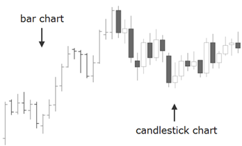

Glossary
C
The Pound Sterling or the British Pound, nicknamed the cable and also nicknamed ‘quid,’ is the official currency of England and The United Kingdom, including The Falkland Islands, Gibraltar, The Isle of Man, Guernsey, and other territories.
The term cable first began when rates were exchanged via transatlantic cable, starting in the 19th Century. The GBP/USD currency cross (with the GBP as the base currency and the USD as the quote currency) is a major cross pairing two ‘reserve’ currencies.
Experience the industry’s #1 Forex Binary Options Trading Platform and the first Binary Options Retail Dealing Room. Opening a Liberty Banc Trading Account is an easy 1, 2, 3 process.
Register now and then share your financial dreams and desires with your account manager or personal broker. Let Liberty Banc be your compass as we guide you on the direct path to your financial dreams and desires.
This is a horizontal spread strategy consisting of the purchase and sale of options with the same strike price but different expirations.
An ‘option’ to buy without the requirement to purchase a specific quantity of stock (the strike price) before the contract expires or at expiration. The former is nicknamed American Style Option, the latter is a European Style Option.
Candlesticks are chart images (see below) used for the charting of security instruments or asset as they move down or up through a price range during a specific moment in time, depending on the chart being used – i.e. a 1 minute, 5 minute, 4 hour chart, etc. The candlestick has a body composed of wicks, both upper and lower, and the area in between. The wicks show the highs and lows of that specific candlestick time.

Candlestick charts, as opposed to bar charts, line charts, etc. are charts using the candlestick method of charting a security, asset, commodity, index, stock, option, future or whatever is being traded, including currency pairs, binary options, etc.
Do you want to learn to trade Candlesticks? Do you already know? Our education and training is designed to make you a better, more successful and profitable trader regardless of your level of experience.
Trade Forex, Indices, Commodities, Stocks and more on our Binary Options Platform. Opening a Liberty Banc Trading Account is an easy 1, 2, 3 process. Register now.
Capital is accumulated wealth. That is what we do at Liberty Banc. We plan, guide, direct, create and help manage wealth for our clients.
If you hold a currency position overnight you will pay an interest rate carry charge.
Carry charges are the real cost of storage of commodities such as metals, grains, livestock, etc. The charges include interest, insurance, etc., also known as cost of carry.
The real commodity as opposed to the futures contract which is based on the real commodity. Actuals.
All futures contracts have underlying instruments which are sold in a cash market or a securities exchange.
Spot or Spot Price
See Cash Market.
Instead of delivering the actual commodity or the real commodity, the difference between the future and the market price is paid. Typically the option seller pays this.
Chicago Board Options Exchange.
A Central Banks controls, administrates, and manages a nation’s currency and monetary policy, such as the Federal Reserve of the US, or the German Bundesbank, European Central Bank, Bank of England, and the Bank of Japan. Exchange rate policies, banking regulations, issuing of currency are other responsibilities.
A time deposit held in a bank which pays a certain amount of interest to the depositor.
The Commodity Futures Trading Commission.
Chartist analysis is an investment method based on the study of price and volume of the various listed securities. It is also called graphical analysis. This method is especially used by traders who apply in the very short term to take positions on the market. The chartist analysis can however be used in the medium and long term.
For this, it is based on historical price and identifies areas of reversing trend. These areas are called psychological support and resistance. At their approach, based on the historical price, investors tend to buy near support and sell near resistance. This is the mimicry of investors who gives strength to the reversal. But beware, this method is not foolproof, support and resistance are made to be broken.
During their break, there is often bullish or bearish acceleration in either a support or resistance. Subsequently a study of figures formed by the stock can be performed. These figures, such as the bull W, triangle, and many others are all indications to determine the evolution of the share price.
Mathematics plays an important role in the chartist analysis, we can calculate the potential increase or decrease. However, the chartist analysis is a study of investor behavior, their psychology. This method is in contrast to the fundamental analysis that it is based on the study of business in these accounts.
Founded in 1848, located obviously in Chicago, Illinois, USA and is the largest futures exchange.
CME Group Inc. (Chicago Mercantile Exchange) is the largest options and futures exchange and the CME Group controls, owns, and operates large derivatives and futures exchanges in Chicago, and New York City, as well as online trading platforms. They own New York Mercantile Exchange and Commodity Exchange, Inc (COMEX). They own the Dow Jones Stock and Financial indices, which subsequently became the S&P Dow Jones Indices, in which CME has approximately a 25 percent stake. They also own the KCBOT (Kansas Board of Trade)
The price used to calculate the end of day account values based on the last transaction of an option contract or futures contract.
This is an options protective strategy which involves the purchase of stock, the subsequent sale of a covered call, while purchasing a protective put option on the same stock. Used for protection of an existing position in any stock market, this other term is sometimes used: "fence" – the real question is this – are you sitting on the fence? Would you like to start a winning trading account? Regardless of your level of experience, our market insight is exceptional,
Experience the industry’s #1 Forex Binary Options Trading Platform and the first Binary Options Retail Dealing Room. Opening a Liberty Banc Trading Account is an easy 1, 2, 3 process.
Register now and then share your financial dreams and desires with your account manager or personal broker. Let Liberty Banc be your compass as we guide you on the direct path to your financial dreams and desires.
This agreement established the post war currency and foreign exchange market. It initially fixed gold at $35 an ounce, and fixed currency rates. In 1971 President Nixon created the floating exchange rate thereby overturning the agreement and replacing the fixed rates.
This is another spread strategy with equal number of long puts, short calls or long calls and short puts. These spread strategies, collar, combination, etc. usually have different expirations and strike prices.
Typically used for financing of short-term needs. It is unsecured debt issued by the corporation.
Commodities are defined as marketable items produced to satisfy a want or need. These can be goods and / or services. Some of the commodities or goods you may be familiar with are Oil, Gold, Platinum, Coffee, Pork Bellies, etc.
Commodities are usually classified into two groups or classifications – soft or hard. Soft commodities are grown, hard commodities are mined or extracted. Some examples of some soft commodities are Cocoa, Corn, Coffee, Grains, Soybeans, Sugar, Wheat, Fruits, etc. Examples of Hard commodities are Oil, Gold, Silver, Rubber, Platinum, etc.
Commodities are also grouped into four distinct categories: Agriculture (rice, corn, cotton, etc.); Energy (gas, natural gas, oil, heating oil, etc.); Metals (copper, gold, platinum, silver, etc.) and Livestock & Meat (live cattle, pork bellies, etc.)
-
Why Trade Commodities with Liberty Banc
We have removed all complexities from your trading experience. Trading Commodities on the Liberty Banc Binary Options Trading Platform has simplified the entire commodities trading process and experience.
Forget fees, margins, spreads and everything else you may have heard about trading commodities or commodity trading platforms. We have eliminated the need for complex and difficult educational and training and have created the ideal trading environment conducive to simplicity and success.
Some of our traders are trading within minutes after opening an account – immediate profits do occur and can happen with you in a matter of minutes to a few hours. Opening a Liberty Banc trading account is an easy 1, 2, 3 process. Register now!
Interest which also included interest already earned.
This is a limited risk/reward options strategy which consists of four options with four strike prices which make up the condor body and the condor wings.
A Purchase and Sale Statement which shows the price and the number of contracts bought or sold.
A traded instrument in the futures markets which specifies quality, quantity, future date and cash settlement or delivery of commodities.
Sometimes called a narrowing of the basis, convergence refers to converging prices during delivery months of real commodities and the futures.
Sometimes referred to as a closing transaction, a cover is used to close an existing short position through the purchasing of options.
A long stock or futures position covered by a short call option position.
A short call which is covered and combined by the long stock purchase and a short put with the same expiration but different strike price.
An option against which the seller has enough collateral (either in cash or stock) to fulfill the contract in the event of assignment. Covered Call - a call option is considered covered when the writer (seller) of the option already owns the shares and doesn't have to make an open market purchase should an assignment occur Covered Put - a put option is considered covered when the seller has enough cash in the account to purchase the shares at the strike price if the holder of the option exercises the right to sell the stock at that price.
A short call which is covered and also called a covered combination when it is combined by a long stock purchase and a short put with the same expiration but different strike price.
Bear Call spreads, Bull Put spreads – where the value of the short surpasses the long position value.
The exchange rate between 2 currencies excluding the country where the currency cross is quoted.
When currencies have sharp gains or losses, there is a risk of loss incurred.
FOREIGN EXCHANGE CURRENCY PAIR (Currency Cross)
-
History
If you look at an example of a currency pair such as the EUR/USD you will see three-letter designations for each currency correspondent to the country, although some countries use the same currency from a different country, for example, Turks and Caicos Islands, Timor-Leste use the US Dollar (USD) as opposed to their own currency.
Regardless, each currency has a designated currency code according to ISO 4217. In addition, Commodities such as Gold, Silver, Platinum, etc., also have designated three-letter codes, e.g. XAU for Gold, XPD for Palladium, XPT and XAG for Platinum and Silver.
What is ISO 4217, you may ask? According to SVN, the Swiss Association for Standardization,“ISO 4217 is the International Standard for currency codes. The most recent edition is ISO 4217:2008. The purpose of ISO 4217:2008 is to establish internationally recognized codes for the representation of currencies. Currencies can be represented in the code in two ways: a three-letter alphabetic code and a three-digit numeric code.”
-
Base Currency vs. Quote Currency
Currency is traded in pairs or crosses – one is your ‘base’ currency, the first currency quoted in the currency cross or pair, and the other is the ‘quote’ currency - buying one currency while simultaneously selling the other. For example, the Euro is normally paired against multiple currencies such as the U.S. Dollar (or EUR/USD), the British Pound (sometimes referred to as the British Cable - EUR/GBP), or the Australian Dollar (EUR/ AUD).
The currency pair shows how much of the quote currency is needed to purchase one unit of the base currency. The ‘bid’ (buy price) represents how much of the quote currency is needed for you to get one unit of the base currency. Conversely, when you sell the currency pair, you sell the base currency and receive the quote currency. The ‘ask’ (sell price) for the currency pair is what you would receive in the quote currency for selling one unit of base currency.
Start Trading Today! -
The Major Currency Pairs / Crosses
Currency Pairs are initially categorized by Majors - Euro (EUR), GBP (the Cable - Pound Sterling), Australian Dollar (AUD), New Zealand Dollar (the Kiwi – NZD), United States Dollar (USD), Canadian Dollar (CAD), Swiss Franc (the Cheffie – CHF), and the Japanese Yen (JPY) – and then they are categorized by other minor or other types such as commodity currencies. Below, the major crosses are listed:
- AUD/USD: The Australian Dollar & The U.S Dollar
- GBP/USD: The British Sterling (Pound) and The U.S Dollar
- EUR/USD: The Euro and The U.S Dollar
- NZD/USD: The New Zealand Dollar and The U.S Dollar
- USD/CHF: The U.S Dollar and The Swiss Franc
- USD/JPY: The U.S Dollar and The Japanese Yen
- USD/CAD: The U.S. Dollar and The Canadian Dollar (Loonie)
The United States Dollar, the British Pound, the Euro and the Japanese Yen are considered reserve currencies. The United States Dollar, constitutes approximately two-thirds of holdings, is the most commonly held, and currently the Euro is the second in terms of holdings, making up approximately a quarter of reserves.
-
The Three Commodity Pairs
The commodity currencies originate from countries which have large quantities of natural resources or commodities. These natural resources usually represent the majority of these countries' exports, and subsequently the strength of these economies are highly dependent on the market prices of these commodities.
Not all countries rich in natural resources have currencies which are commonly traded. As a result, trading will usually involve only these three countries which are not only rich in commodities, but also have free floating or liquid currency. These are Australia, New Zealand, and Canada represented by the Australian Dollar, The New Zealand Dollar, and the Canadian Dollar!
-
Why Trade Currencies and FOREX with Liberty Banc
First, we have removed all complexities from your trading experience. Trading currency on the Liberty Banc Binary Options Currency Trading Platform has simplified the entire trading process.
Forget fees, margins, spreads and everything else you may have heard about trading currency or FOREX Brokers. We have eliminated the need for complex and difficult educational and training and have created the ideal trading environment conducive to simplicity and success.
Some of our traders are trading within minutes after opening an account – immediate profits do occur and can happen with you in a matter of minutes to a few hours. Open a Liberty Banc trading account today! Open Account now!
A nation’s legal tender controlled and issued usually by the nation’s central bank or Federal Reserve System. The currency constitutes value which is then exchanged in domestic trade and international trade.
As part of our security process and as regulated by our regulating authority, all client funds are kept in segregated accounts.
Expiration period of months relating to a specific series of options.
The Cyprus Securities and Exchange Commission. This is the Republic of Cyprus Official Authority responsible for the management, direction, administration and regulation of the financial industry services, brokerages and brokers who provide investment services and transactions in securities carried out in the Republic.